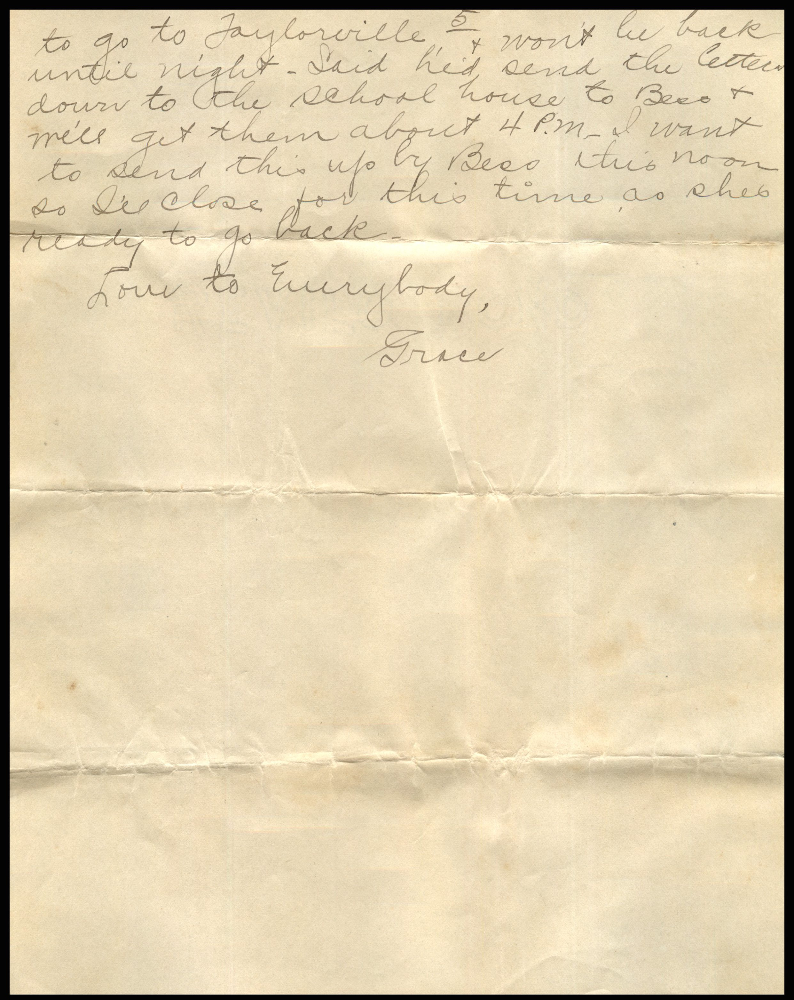
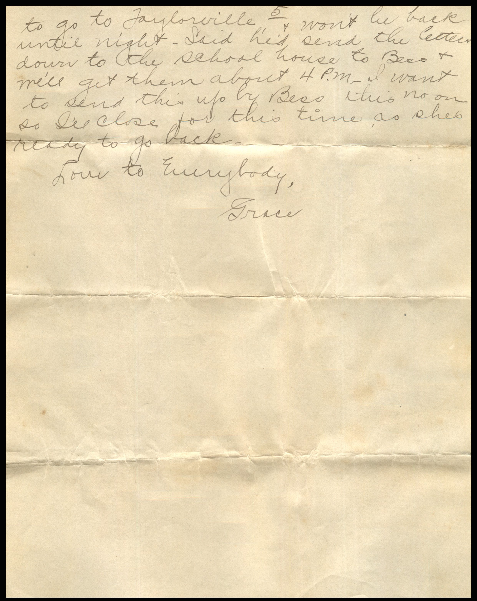

From: Grace Chandler, To: Chandler Family


 

{kind=link}
From: Grace Chandler, To: Chandler Family
Monday 8th '17 Dearest Folks Will try to write you a few lines this am. Was so glad to hear from Mama yesterday. Doesn't matter to whom they are addressed, just so I get them. Am feeling much better, one breast is still swelled, and I have the night sweats and a breaking out on my body caused from fever, But I am getting stronger every day now. Mrs. Kelley left Saturday P.M. and I bathed the baby yesterday and this morning. She is doing fine and everyone was out yesterday afternoon, then Mr. and Mrs. Geo Maxon and son wee out last night. Guess we'll keep having company, as so many have told Lorin they're so anxious to see the baby. He's going to try and get some pictures of her this noon. Thanks to Grandma Chandler, she has another silver dollar to add to her savings. Don't think she should have done it, but we appreciate it. Lorin took her little bank up to the bank this A.M. He adds something every day I think. Mrs. Klingner and Mella were out after you left Mama and brought her a little solid gold hand ring. The material Ruby has for her coat is so pretty and I'm sure proud of it. Guess you'd be surprised, as we were shocked to hear Mr. Bartlett the Wabash agent here, committed suicide in the depot on Friday. No reason has been assigned to his rash act, but an auditor came in to check him up and a dray man testified at the coroners inquest that he had heard them arguing over some freight bills. Some additions that had been added to Paddock Lumber Co.'s bills. But other people think it was family affairs. Will send you the clippings from the papers if I can find them. He was the agent here for 7 years. It certainly was a shock to everyone as they were supposed to have been the happiest of families. Am so glad to have Ruby here. She is so good to me, but I'll tell you I missed Mama and so did Mrs. Kelley. She spoke of you so often. Bess was so sleepy after talking all night that she layer down and slept in the afternoon and I had a lump in my throat all day. Ruby had spells over the "offspring" when she arrived and has never quite gotten over her yet. Wish everyone of you could see her. Lorin is going to be in a minstrel show tomorrow night in Taylorville , some fellows pulled out at the last minute and they asked Lorin to take one place. He's to be an end man and has a prominent part. He's studying his song "Are you from Dixie" and his gags. Either Bess or Ruby will go to Taylorville and see it. Wonder what causes Mama to get so dizzy? Mrs. Kelley had those kind of spells. Yes, we let Mrs. Wilson know you had gone. She was called to St. Louis on Friday to take care of her niece, a trained nurse, who has pneumonia and expects will be gone for some time. Mrs. Peuce (your advisor Mama) is also very ill with pneumonia. They have a trained nurse to care for her. Other box from fathers came after such a time. He sent the baby a powder puff, me a small picture of mother and a baby, a towel, and a box of stationary, and a lot of Christmas candy. Was nice of him to remember us. He sent each member of his family something. We heard from mother , three miners and she have taken more cold and was having lots to do. Bess and Lorin went to Bartlett's funeral. It as held at the house hey said. There were oceans of flowers. Will be glad to get Lucerne's drawings . Was so sorry to her Mary school her, but its all over now and it didn't hurt anyway did it Lucerne? When little Jack was here, he went over to Waggners and told them we had a dog. They said "what kind of dog is it?" he said he didn't know. They asked if it was a bird do. He said, "No! This dog don't fly!" Ha. Mrs. Waggner and Gladys came over the next day after you left. We have had lots of company. Lorin just called up from town and said I had letters from home, but he had to go to Taylorvillle and won't be back until night. Said he'd send the letters down to the school house to Bess and I'll get them about 4 pm. I want to send this up by Bess this noon so I'll close for this time as she's ready to do back. Love to Everybody, Grace